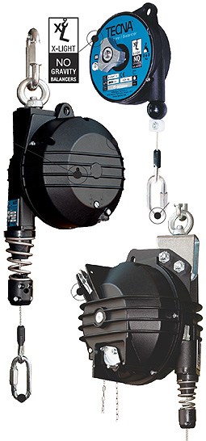

Página principal equilibradores
La nueva gama de EQUILIBRADORES Tecna distribuidos por Tecsolda añaden funcionalidad y manejabilidad a sus herramientas neumáticas.
La gama X-lite permite soportar herramientas ligeras de 2kg./ 3Kg.
La gama Lite permite soportar herramientas de diferente peso van de 2kg./ 8Kg. y de 8kg./12kg.
La gama MEDIUM tiene un alcance de peso soportado que van desde 4kg./25kg. Permiten la opción F, el equipamiento con dispositivo de freno que regula la velocidad de rotación del tambor.
La gama HEAVY tiene un alcance de peso soportado que van desde 10kg./75kg.
La gama X-HEAVY disponible con opción RI dispositivo de sujeción que permite aislamiento y rotación. Opción B Mando a distancia colgante para bloqueo y desbloqueo de la carga peso soportado de 35kg./100kg.y 100kg./180kg
Están disponibles equilibradores especiales para aplicaciones especificas bajo demanda.
Contacto y catálogo equilibradores: Equilibradores Tecsolda Tel. 93 777 64 21
Página en construcción